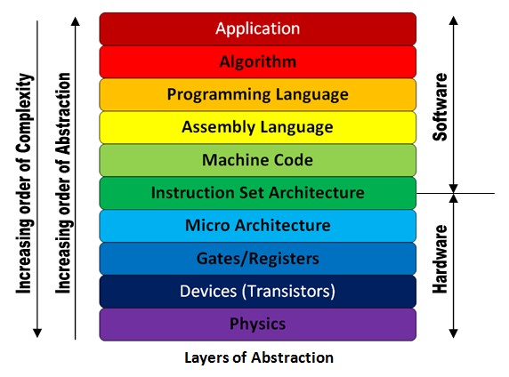

Why You Already Love Functional Programming
In which I endeavor to demonstrate how key underlying principles found in Functional Programming are principles that we all--through training and experience--have already come to inherently understand are good principles to follow when writing software.
About Me
Software Engineer at Lucid for 9 years
Our Brains Like Abstractions
-
Abstraction is the thought process where ideas are generalized from objects
- Allows general patterns to be extracted from specific things, problems, or events
-
Can hold higher-level concepts in our minds, makes us more productive
- Allows us to work with general ideas rather than being bogged down by specific details
- Recognising patterns is one of the key aspects of computational thinking

If I'm such a god, why isn't Maru *my* cat?
Source: xkcd.com
Computer Science is All About Abstraction
- Most developers focus on the “application” or “algorithm” views of our programs
Abstraction often involves figuring out how to break our application into appropriate algorithms, and how to reduce those algorithms down further into even smaller moving parts
Benefits of a Well-Abstracted System
- It is easier to get it to do what you want
- It is easier to maintain
- Important moving parts are more reusable
- Less knowledge is needed to use it correctly
- The nitty-gritty details are still accessible when needed
Thinking in a “Programming” Way
- When programing, you start with a big problem and break it down into smaller problems
- Small problems get small, simple solutions
- Simple solutions get recombined to become big solutions
- Big solutions solve big problems
- Learning how to break problems down is one of the most important learning curves to becoming a programmer
Imperative Programming
- At the lowest level, computers must be told exactly what to do
-
Grants finer-grained control
- More flexible, less reusable
- Often more performant
-
Imperative programs state precise instructions, but make it harder to express intent
- Required to create a solution that computers can carry out
- Not closely aligned with the way people think about and solve problems
Less vs More Abstract

-
Less Abstract
- More control
- Less reusable, less DRY
- Computable
-
More Abstract
- Intent is more clear
- Easier to use, maintain
- Possible control and performance costs
- Must be broken down concretely to be computable
String Interpolation
// C
char thing[] = "bird";
int count = 2;
printf("A %s in the hand is worth %d in the bush\n", thing, count);// Scala
val thing = "bird"
val count = 2
print(s"A $thing in the hand is worth $count in the bush\n")Regular Expressions
// Typescript
const userUrl = 'https://users.lucidchart.com/users/1809753';
let id;
if (userUrl.startsWith('https://users.lucidchart.com/users/')) {
const idPart = userUrl.substring('https://users.lucidchart.com/users/'.length);
const maybeId = parseInt(idPart);
id = isNaN(maybeId) ? null : maybeId;
} else {
id = null;
}// Typescript
const userUrl = 'https://users.lucidchart.com/users/1809753';
const userRegex = /https:\/\/users\.lucidchart\.com\/users\/(\d+)/;
const match = userUrl.match(userRegex);
const id = match === undefined ? null : parseInt(match[1]);Case Classes
// Scala
class User(val name: String, val id: UserId) {
def copy(name: String = name, id: UserId = id): User = new User(name, id)
def equals(o: Object): Boolean = ???
def hashCode: Int = ???
def toString: String = s"User($name, $id)"
}
object User {
def apply(name: String, id: UserId): User = new User(name, id)
def unapply(user: User): (String, UserId) = (user.name, user.id)
}// Scala
case class User(name: String, id: UserId)HTML Click Handling
// Javascript
const element = document.getElementById('my-id');
element.addEventListener('click', handleClick, false);<!-- HTML (Angular) -->
<div
id="my-id"
(lucidClick)="handleClick"
>
</div>JSON Serialization
// Scala
const cardInfo: CreditCardInfo = ???
Json.obj(
"number" -> cardInfo.number,
"name" -> cardInfo.cardHolderName,
"cvv" -> cardInfo.cardVerificationValue,
"expiration" -> cardInfo.expiration,
)// Scala
const cardInfo: CreditCardInfo = ???
Json.toJson(cardInfo)(CreditCardInfo.writes)
Real programmers set the universal constants at the start such that the
universe evolves to contain the disk with the data they want.
Source: xkcd.com
In conclusion, Imperative Programming has an important place, but Declarative Programming tends to be preferred.
Declarative Programming
-
Emphasizes the “what” rather than the “how”
- Emphasizes abstraction
- Much more closely aligned with the way people think about and solve problems
- Declarative implementations are always backed by something less abstract and more imperative
Thinking in a Human Way
- We should put more effort into designing code and systems that reflect the way humans think and approach problems instead of the way computers do
- Good abstractions allow complexities to be hidden when they don’t matter but exposed when they do
The Part Where We Transition To Talking About FP
-
Summary
- Higher-level programming and design is important for developer efficiency
- Lower-level programming is important for performance
- We should aim to properly abstract away the complex with reusable abstractions
-
Now that we all agree that Declarative Programming is a good thing:
- Functional Programming is a subset of Declarative Programming!

Functional programming combines the flexibility and power of abstract mathematics
with the intuitive clarity of abstract mathematics.
Source: xkcd.com
What is Functional Programming?
Programming without side effects.
// Typescript, with side effects
const count = 1
const addOne = function() {
return ++count;
}
console.log(addOne()); // 2
console.log(addOne()); // 3// Typescript, without side effects
const count = 1
const addOne = function() {
return count + 1;
}
console.log(addOne()); // 2
console.log(addOne()); // 2This is called a pure function.
What Else is Functional Programming?
-
Declarative
- Describes what you want, leaving the steps to get it to the function itself
- Based on composition of functions
- Language-agnostic
FP is Based on Math
-
Lambda Calculus
- A form of math that expresses computation
-
Math is full of functions
- \[f(x) = 3x + 1\]
-
Pure functions
- As in math, FP functions should not have side effects
What is a "Functional Programming Language"?
- Functional programming is a programming style / paradigm
-
Common traits
-
Functions as first-class types
- Can be created, passed as parameters, returned from other functions
- Emphasis on immutability
- Emphasis on lack of side effects
-
Functions as first-class types
- All principles of FP can be practiced in almost any language, though they are made easier with language support
Functional Programming is Becoming More Common
- Many languages are multi-paradigm
- Even historically imperative languages like Java have been introducing FP concepts in more recent releases
// Java
btn.setOnAction(new EventHandler<ActionEvent>() {
@Override
public void handle(ActionEvent event) {
System.out.println("Hello World!");
}
});// Java
btn.setOnAction(
event -> System.out.println("Hello World!")
);Guiding Principles of Functional Programming
- Pure functions
- No mutation
- Expression-based programming
Pure Functions
-
A function that:
- has no side effects
-
returns the same result for the same inputs
- referential transparency
-
Easier to reason about
- Easier to test and debug
- Threadsafe, parallelizable
- Easier to formally verify
- Allow for some compiler optimizations
Referential transparency
- Calling a function multiple times with the same inputs results in the same outputs
-
Idempotent
- Repeated calls do not result in new changes
-
Makes code more cacheable/memoizable
- Save the result of an expensive calculation for given inputs
Immutability
- A new copy of an object must be created to change its state
-
Makes code easier to reason about
- Guarantees thread safety
- Generally only enforceable at compile time
-
Results in many object creations/deletions
- Stale objects can be garbage collected
Immutability and pure functions go hand-in-hand
// Typescript (mutable, impure)
const a = [1, 2, 3];
const b = a.push(4);
console.log(a); // [1, 2, 3, 4]
console.log(b); // 4 (length of the new array)//Typescript (immutable, pure)
const a = [1, 2, 3];
const b = a.concat(4);
console.log(a); // [1, 2, 3]
console.log(b); // [1, 2, 3, 4]Immutability and Functional Programming
-
Functional Programming encourages immutable state
- Objects do not need to be copied (pass-by-reference) to guarantee pure functions won't modify them
- Pure functions must return something to perform any work
Recursion
- A looping construct where a function calls itself
- Used to break down larger problems into small, incremental problems
- Doesn't require mutable state like a conventional for loop
// Typescript
// Calculate x!
function factorial(x) {
if (x <= 1) {
return 1;
} else {
return x * factorial(x - 1);
}
}Pitfalls of Recursion
-
Infinite loops
- Requires a base case
- "Pete and Repeat were walking up a wall. Pete fell down; who was left?" "Repeat." "Pete and Repeat were walking up a wall..."
- Stack overflows
Tail Recursion
- When the recursive call is the very last line of the function
- Does not add new stack frames; no stack overflow
-
Compiler optimization
- Resulting machine code implemented very similar to a while loop
// Scala
// Calculate x!
@tailrec
def factorial(x: Int, accumulator: Int = 1): Int = {
if (x <= 1) {
accumulator
} else {
// Multiplication happens before function call;
// function call is in tail position
factorial(x - 1, accumulator * x)
}
}Recursion and Pure Functions
Recursive functions tend to be pure functions
// Typescript (iterative)
const items = [1, 2, 3, 4, 5];
let sum = 0;
for (let i = 0; i < items.length; i++) {
sum += items[i];
}
console.log(sum); // 15// Typescript (recursive)
const items = [1, 2, 3, 4, 5];
function sum(list: Array<number>) {
if (list.length == 0) {
return 0;
} else {
return list[0] + sum(list.slice(1));
}
}
console.log(sum(items)); // 15<spoilers>Analogous to fold/reduce</spoilers>
Recursion and Pure Functions
// Typescript
const items = [1, 2, 3, 4, 5];
for (let i = 0; i < items.length; i++) {
items[i] *= items[i];
}
console.log(items); // [1, 4, 9, 16, 25]// Typescript
const items = [1, 2, 3, 4, 5];
function arraySquare(arr) {
if (arr.length == 0) {
return [];
} else {
const tail = arr[arr.length - 1];
const heads = arr.slice(0, arr.length - 1);
return arraySquare(heads).concat(tail * tail);
}
}
console.log(arraySquare(items)) // [1, 4, 9, 16, 25]<spoilers>Analogous to map</spoilers>
Expressions vs Statements
// What are the results of evaluating these two lines of code?
// 1
if (favoriteColor != null) favoriteColor else defaultFavoriteColor;
// 2
favoriteColor != null ? favoriteColor : defaultFavoriteColor;-
Expressions naturally follow from pure functions
- "Pure functions must return something to perform any work"
- Statements are more common when only the side effect of the code is desired
Other Tools and Common Patterns
-
First-class functions
- Higher-order functions
- Partial application (Currying)
- Strict vs lazy evaluation
- Data structures
First-Class Functions
- Functions as a data type like number or string
- Can be passed as parameters or returned from a computation
// Typescript
const myFunction = function(x) { /* something awesome */ };Higher-Order Functions
Functions that take a function as a parameter
// Typescript
const isEven = function(x) { return x % 2 == 0; };
const evens = [1, 2, 3, 4, 5].filter(isEven);
console.log(evens); // [2, 4]Array.filter() is a higher-order function
Partial Application (Currying)
A function that takes part of its parameters and returns another function that takes the rest of the parameters and performs the computation
// Typescript
// Normal function
const add = (x, y) => {
return x + y;
};
// Curried function
const partialAdd = (x) => {
return (y) => { return x + y; };
};
const plusTwo = partialAdd(2);
plusTwo(2); // 4
plusTwo(5); // 7
partialAdd(5)(11); // 16Strict vs Lazy Evaluation
- Pure functions without data dependencies can be evaluated in any order, so why not delay them for as long as possible?
- Runtime performance in exchange for difficulty in reasoning about order of computation
- Results can be cached to avoid needless re-calculating
- Allows for data structures of potentially infinite size
// Scala (strictly evaluated)
println(List(1, 2, 3 / 0, 4, 5).length) // java.lang.ArithmeticException: / by zero-- Haskell (lazily evaluated)
print (length [1, 2, 3 / 0, 4, 5]) -- 5This List Contains Every Fibonacci Number
-- Haskell
fibs :: [Int]
fibs = 0 : 1 : [ a + b | (a, b) <- zip fibs (tail fibs)]
main = do
print (fibs !! 50) -- 12586269025
print (length fibs) -- Never halts
The problem with Haskell is that it's a language built on lazy evaluation and
nobody's actually called for it.
Source: xkcd.com
Data Structures and Higher Order Functions
-
Offer a different API to take advantage of functional programming practices
- Immutability
- Higher-order functions
- Recursion
Common Higher-Order Operations
- foreach
- map
- flatten
- flatMap
- filter
- find
- some/exists
- each/forall
- reduce/fold
foreach
-
Calls a function on every element in the data structure
- Returns nothing; function should have side effects
// Java
for (Student student : students) {
System.out.println("Processing student " + student.name);
// Do stuff with student
}// Scala
val students: List[Student] = ???
students.foreach { student =>
println(s"Processing student ${student.name}");
// Do stuff with student
}map
- Conceptually similar to foreach
-
Calls a function on every element
- Function should return a mutated value
- Creates a new data structure with results
// Typescript
[1, 2, 3, 4, 5].map((x) => x + 3); // [4, 5, 6, 7, 8]
const names = students.map((student) => student.name);flatten
- Sometimes map returns an entire data structure
- Concatenates all values of the inner data structures and returns the outer data structure type
// Scala
case class Student(name: String, classes: List[String])
val students = List(
Student("Sally", List("CS101", "BIO310")),
Student("George", List()),
Student("Bradly", List("CS101")),
Student("Carol", List("TECH210", "CS320", "PHYS101"))
)
val classesDoubleArray: List[List[String]] = students.map(student => student.classes)
val classes: List[String] = classesDoubleArray.flatten
println(classes) // List(CS101, BIO310, CS101, TECH210, CS320, PHYS101)flatMap
Performs map and flatten in a single call
// Scala
case class Student(name: String, classes: List[String])
val students = List(
Student("Sally", List("CS101", "BIO310")),
Student("George", List()),
Student("Bradly", List("CS101")),
Student("Carol", List("TECH210", "CS320", "PHYS101"))
)
val classes: List[String] = students.flatMap(student => student.classes)
println(classes) // List(CS101, BIO310, CS101, TECH210, CS320, PHYS101)filter
-
Takes a predicate function
- A function that takes a parameter and returns a boolean
- Returns a copy of the data structure with every element evaluated to true
// Typescript
const isEven = (x) => x % 2 == 0;
[1, 2, 3, 4, 5, 6, 7, 8].filter(isEven); // [2, 4, 6, 8]find
- Takes a predicate function
- Returns the first element that evaluates to true
// Typescript
const isEven = (x) => x % 2 == 0;
[1, 2, 3, 4, 5, 6, 7, 8].find(isEven); // 2
[1, 3, 5, 7, 9, 11, 15].find(isEven); // undefined// Scala
def isEven(x: Int): Boolean = x % 2 == 0
List(1, 2, 3, 4, 5, 6, 7, 8).find(isEven) // Some(2)
List(1, 3, 5, 7, 9, 11, 15).find(isEven) // Nonesome/exists
- Takes a predicate function
- Returns true if any element evaluates to true
// Typescript
[1, 2, 3, 4, 5, 6, 7, 8].some(isEven); // true
[1, 3, 5, 7, 9].some(isEven); // false
[].some(isEven); // falseevery/forall
- Takes a predicate function
- Returns true if every element evaluates to true
// Typescript
[1, 2, 3, 4, 5, 6, 7, 8].every(isEven); // false
[2, 4, 6, 8].every(isEven); // true
[].every(isEven); // truereduce/fold
- The most powerful functional operation for data structures
- Every previous operation can be implemented using reduce
-
Takes:
- The starting value
- A function that takes the current accumulated value and the next value in the list
- Returns the final accumulated value
// Typescript
[1, 2, 3, 4, 5, 6, 7, 8].reduce(
(acc, x) => acc || isEven(x),
false
); // `.some(isEven)`Other reduce examples
// Typescript
[1, 2, 3, 4, 5, 6, 7, 8].reduce(
(acc, x) => acc + x,
0
);// Typescript
[1, 2, 3, 4, 5, 6, 7, 8].reduce(
(acc, x) => acc.concat(x + 3),
[]
);// Typescript
[[1, 2], [3], [4, 5, 6], [7], [], [8]].reduce(
(acc, x) => acc.concat(x),
[]
);// Typescript
[1, 2, 3, 4, 5, 6, 7, 8].reduce(
(acc, x) => !acc && isEven(x),
false
);reduce is powerful but complex; prefer more specialized functions
Summary
- Declarative vs Imperative Programming is about abstraction
- Functional Programming focuses on Pure Functions and Immutability
-
FP principles make code:
- Easier to reason about
- Safer to refactor
- Safer to parallelize